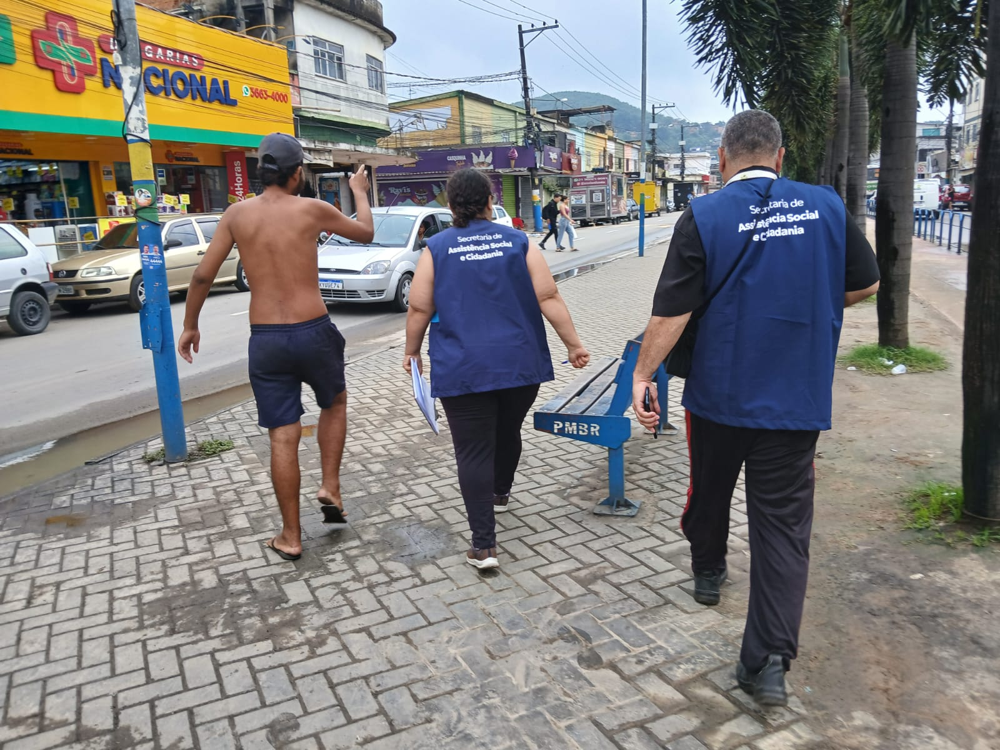

SEMASC
Articulação das equipes e diálogo com os educadores do CREAS para levantamento de informações.

Proposta de estudo territorial para o município de Belford Roxo
Apresentação da proposta
A SEMASC propõe um levantamento direcionado à população em situação de rua de Belford Roxo.
O estudo reunirá informações de campo e dados administrativos para apoiar o diagnóstico municipal e orientar respostas públicas adequadas às necessidades identificadas.
Informações que apoiam decisões públicas
Construir um retrato territorial atualizado da população em situação de rua.
Metodologia
Articulação das equipes e diálogo com os educadores do CREAS para levantamento de informações.
Acompanhamento das ações e facilitação do acesso da população em situação de rua ao SUS.
Apoio operacional para a realização segura das atividades de campo.
A integração entre políticas públicas amplia a cobertura do estudo e qualifica os encaminhamentos.
Trajetória do processo
Definição inicial da proposta e dos atores envolvidos.
Instituto de Pesquisa Econômica Aplicada: referências técnicas para o mapeamento.
Aprofundamento da metodologia e dos instrumentos.
Instrumento exclusivo para os registros do Centro POP.
Observação técnica na unidade Centro POP e acompanhamento das equipes em campo.
A Vigilância Socioassistencial elaborou o formulário de coleta e as apresentações técnicas.
Mapeamento territorial
As equipes percorrerão áreas de maior concentração já identificadas, em turnos diurnos e noturnos.
Coleta de dados
Perguntas de múltipla escolha elaboradas pela Vigilância Socioassistencial com a equipe e a coordenação do Centro POP.
Escuta realizada em pontos estratégicos durante as abordagens sociais.
Consolidação dos dados das abordagens e ações no Mapa Estatístico Mensal.
A Vigilância observa a atividade, e a equipe do Centro POP levanta as demandas apresentadas.
Princípio da abordagem: ética profissional, respeito, defesa e salvaguarda dos direitos humanos.
Análise de dados
Questionários, entrevistas, registros mensais e informações sociodemográficas.
Leitura conjunta dos dados quantitativos e qualitativos.
Informações para o planejamento estratégico da Assistência Social.
A comparação entre fontes ajuda a identificar padrões, prioridades de ação, lacunas de atendimento e territórios prioritários.
Diagnóstico e ações
O relatório preliminar apresentará as principais necessidades identificadas e os locais que exigem atenção prioritária.
Um diagnóstico atualizado para orientar políticas públicas e aprimorar o trabalho continuado do Centro POP.